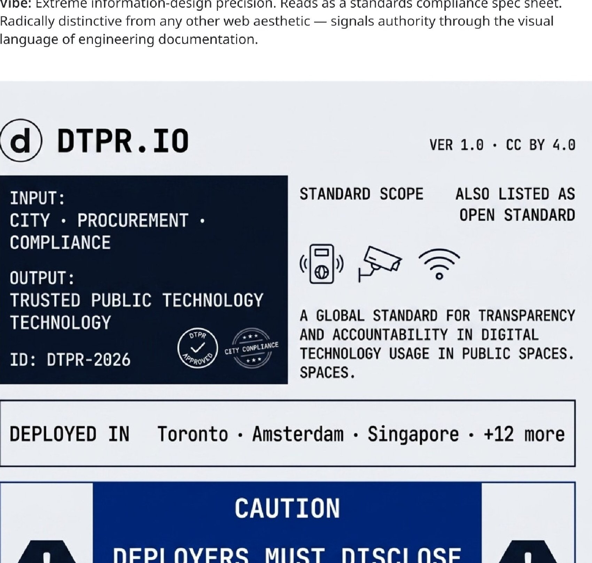
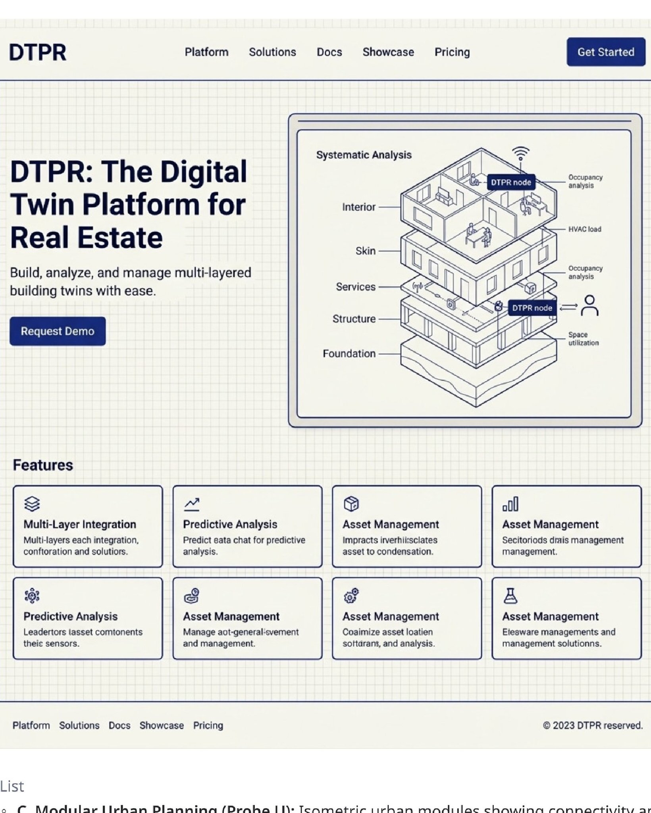
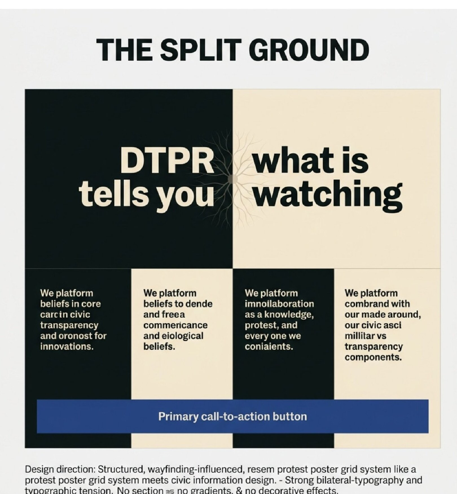
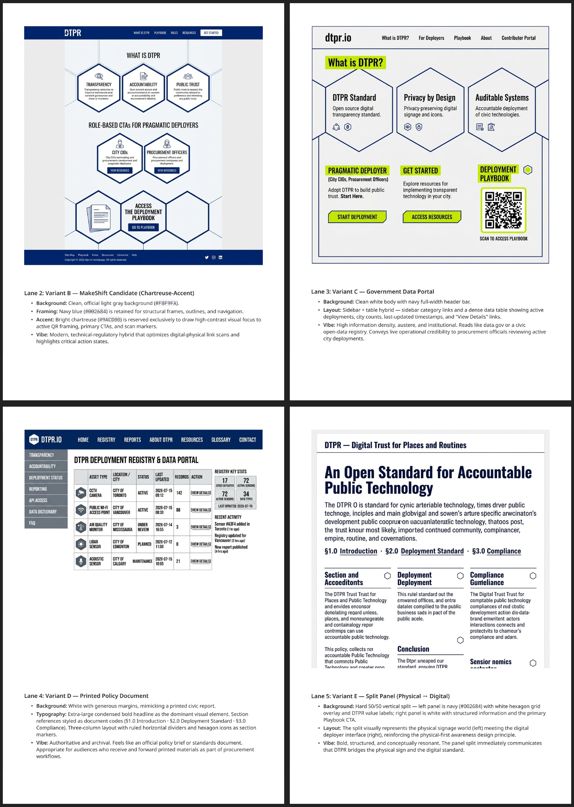
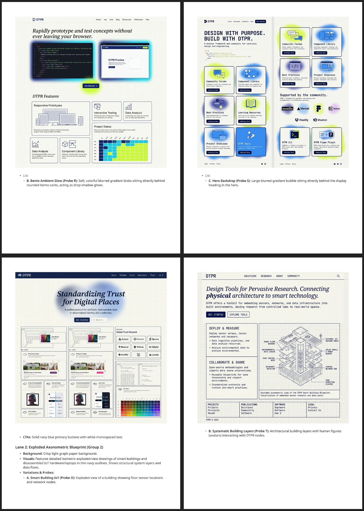
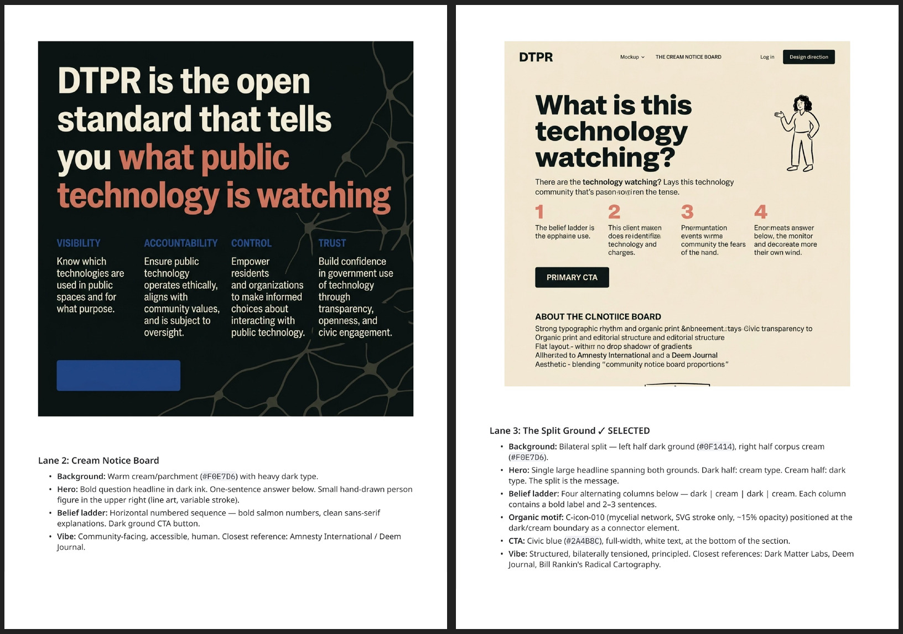

Three Recipes, One Canonical Direction
This page documents the strategic postures that produced DTPR's visual identity system — the three recipes that were sampled against the brief, the Lane that was locked per recipe, and why Recipe B (Maker) became canonical for dtpr.io while Recipes A (Regulatory) and C (Commons) were folded in as sparing, B-rendered flavors. Supersedes the earlier four-posture framing (Options A/B/C/D = Citizen / Maker / Advocate / Deployer) that this page previously described.
Canonical contract notice
This page is the HTML counterpart to BRAND_BOOK.md Section 14 ("Strategic Postures") and Section 15 ("Going Forward") in the vault. The markdown is the contract that travels between agents; this page is what humans read. They agree.
The four-posture framing this page used to describe has been archived. The strategic-postures work since 09-font-protocol.html v0.4 (August 2026) treats three recipes, not four postures, as the unit of analysis. The earlier A/B/C/D vocabulary (Citizen / Maker / Advocate / Deployer) survives as audience descriptions — Deployer, Developer, Advocate — but is no longer a 1:1 mapping to visual systems.
The process, in plain terms
For each recipe, the brand-development workflow produced four artifacts, in this order:
- A Design Brief (text). Names the audience, the features, the primary user actions, and the constraints — what's for. The brief fixes the posture before any pixel is drawn.
- A corpus of mood-board images, organized into four buckets: graphic inspiration (composition and grid references), photo inspiration (register and voice references), textures (surface references), and icons and motifs (shape vocabulary). The mood boards were assembled for review and feedback in the DTPR Visual Identity Miro board — one concept mood board per recipe. From there, for each image, a vision-LLM extraction pass produced a structured JSON (line quality, shape language, dominant palette register, motion,
recipe_fit_score1–5). Color and type are not extracted from images — they are specified as design tokens separately. - A field of Lanes — 8–12 visual probe directions, each rendered as a static screenshot of the homepage at that direction, with a caption naming its background, accent, signature pattern, and reference inspiration. The Lanes are a deliberate sampling of the design space the brief's posture opens up. They are the probes you saw on the concept mood boards.
- A selection. One Lane is locked. The others stay as "exploratory directions retained for history."
The concept mood boards — one per recipe, organized in the DTPR Visual Identity Miro board — are the artifacts of steps 2–4 for each recipe. Step 1 (the Design Brief) lives in recipes/<letter>/design_brief.md. The corpus JSONs live in recipes/<letter>/corpus/*.json.
The Three Recipes at a Glance
Each recipe began with a posture — a named audience and a named mode of address. The postures map to the three audiences the parent brand promised to serve: the people who deploy DTPR (A), the people who build with DTPR (B), and the people who hold DTPR accountable (C).
Recipe A — Regulatory
Concept mood board ↗The page reads as a spec sheet, not as marketing. Authority comes from the visual language of engineering documentation.

inspo-graphic/008.png (Blissful Studio 3.0). Light gray #F0F2F5, sharp bordered zones, input/output/ID panel, deployment evidence strip, caution band. Caption verbatim from the design brief.Recipe B — Maker CANONICAL
Concept mood board ↗The page reads as a technical schematic or interactive IDE. The hero is the one place the voice is not quiet.

#F8F8F2, navy #1B2B80 primary, no chartreuse accents on this Lane (chartreuse arrives as a CTA signal on Lane 7). Layout inspiration: the Tailwind CSS homepage (large hero + side-by-side editor + trust logo grid + 3-column features), using the Blueprint Terminal tokens.Recipe C — Commons
Concept mood board ↗The page reads as a civic notice — a public document for the public. Authority comes from being legible to a person walking past a sensor.

#0F1414 left, cream #F0E7D6 right. Single headline spanning both grounds. Mycelial connector motif at the boundary. Civic blue #2A4B8C CTA. Vibe: "structured, bilaterally tensioned, principled."The exploration fields
The three fields of Lanes are categorically different — you can read a Lane at random and tell which recipe it belongs to.



The through-line — why Recipe B became canonical
By the end of the brand identity sprint, three things had become true at once:
3 structural reasons
- The Developer audience turned out to be a separate product. The deep technical content (MCP server quickstarts, REST API references, UI embed examples, Claude-plugin authoring) was always going to live at
developer.dtpr.io, not on the dtpr.io homepage. The "Technical Evaluator" persona that Lane 5 of Recipe B was optimized for turned out to have a real home elsewhere. Recipe B's homepage role shrank to routing developers onward, not serving them with depth. - The Deployer and Advocate audiences turned out to need the same page. The Deployer (procurement, compliance, RFPs) needed plan/scope/pilot/monitor framing and RFP-grade language — exactly what Recipe A's Industrial Spec Sheet gave. The Advocate (community accountability, feedback pathways, participation) needed trust signals and open channels — closer to Recipe C's tone. But the two audiences don't need separate visual systems; they need a single page that holds both, with role-routing that takes each where they actually need to go. The role-routing pattern (
content/pages/get-started.md→start-here-{deployer,developer,advocate}.md) is what made a single homepage viable. - Recipe B's posture was the most compressible. Recipe A's posture (regulatory / procurement) was already surviving in real Recipe A content (
/playbook/deploy,/standard/audit-rubric) — its real contribution was the procurement-grade copy and routes, not its visual tokens. Recipe C's posture (commons / civic tension) had a genuine contribution in the bilateral-split compositional idea (one anchored graphic against one field) and in the human-warmth flavor. Recipe B's posture (precise and structural with one editorial moment) had the broadest reach — it could hold a procurement section and a split-panel moment and a live-data indicator without breaking character.
The decision in 09-font-protocol.html v0.4 ("Cross-recipe protocol," August 2026) was the formal lock-in: Recipe A and Recipe C are archived. Their distinct content and structural DNA are folded into Recipe B as sparing, B-rendered flavors. Recipe B is now the canonical visual system for dtpr.io. This is not a rejection of Recipes A or C — it is the recognition that the work each Lane was doing has a different answer now.
Reconciliation — what to say about Recipes A and C now
A future agent landing on this page may ask: "Doesn't this mean Recipes A and C were wrong?" No. Each answered its audience correctly — it just answered only that audience. The compression of three audiences onto one homepage is what makes the flavor-fold necessary.
Recipe A · procurement content
Real Recipe A procurement copy and routes (/playbook/deploy, /standard/audit-rubric) survive in the real Nuxt app's content/pages/. Rendered in Recipe B's own system (Public Sans, #1B2B80 navy, chartreuse reservation, rounded corners), never in Recipe A's own tool system. The Procurement flavor survives; the Procurement recipe does not.
Recipe C · split-panel DNA
The bilateral-split compositional idea survives as the homepage's I/O + geometric-network split panel (DESIGN.md Section 5.10, Section 6.3). Rendered with connected navy nodes and straight edges, not with Recipe C's organic amoeba motif. The Structural Contrast flavor survives; the Commons recipe does not.
Neither posture was wrong
Recipe A answered the Deployer's question correctly, but only the Deployer's. Recipe C answered the Advocate's question correctly, but only the Advocate's. Recipe B's posture is what survives the compression of three audiences into one page. The test for any borrowed element lives in BRAND_BOOK.md Section 8: is this this recipe's own render of a real fact or a real structural idea from an archived recipe — or is it that recipe's actual tool, imported wholesale?
Going Forward
This page now hands off to the Going Forward surfaces. The full "where the archived recipes' content lives now" inventory, the structural commitments that "canonical" requires going forward, and the open judgment calls are in BRAND_BOOK.md Section 15. The three highest-leverage moves from Section 15:
The remaining pages in the audit cluster (14 Sprint Morphology, 15 Transformation Morphology, 16 Semantic Morphology, 17 Sprint Recipes, 18 Geometric Blueprint, 19 Core CAA Assets, 20 ISO 3864 Matrix, 21 Responsive Specs, 22 Primitive Derivation) still reference the earlier A/B/C/D posture vocabulary and are being reconciled against this canonical framing in a separate pass. Treat them as historical evidence until that pass ships.